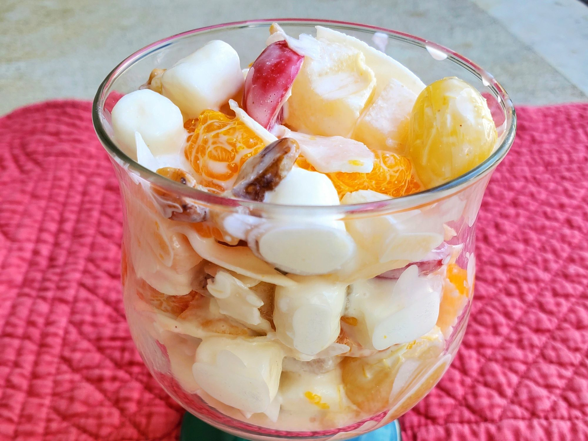

Ambrosia

Description
This is a quick and easy fruit salad that you and your guests will love.
Per Serving: 290 calories; protein 3.7g; carbohydrates 34.5g;
fat 16.6g; cholesterol 10mg; sodium 73.5mg.
Ingredients
- 2 (11 ounce) cans mandarin orange segments, drained
- 2 (15.25 ounce) cans fruit cocktail, drained
- 1 cup chopped walnuts
- 2 cups miniature marshmallows
- 2 cups flaked coconut
- 1 (8 ounce) container sour cream
Steps
- In a large bowl, mix together the oranges, fruit cocktail, walnuts,
marshmallows, and coconut. Fold in the sour cream.
Chill for at least an hour, and stir again before serving.